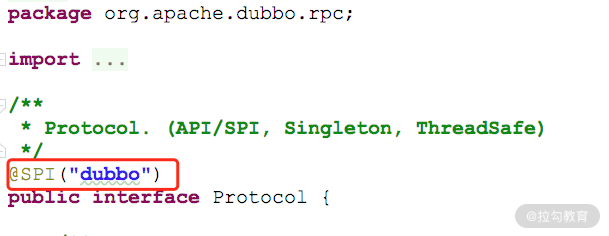
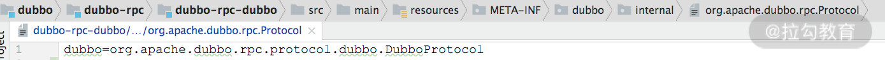
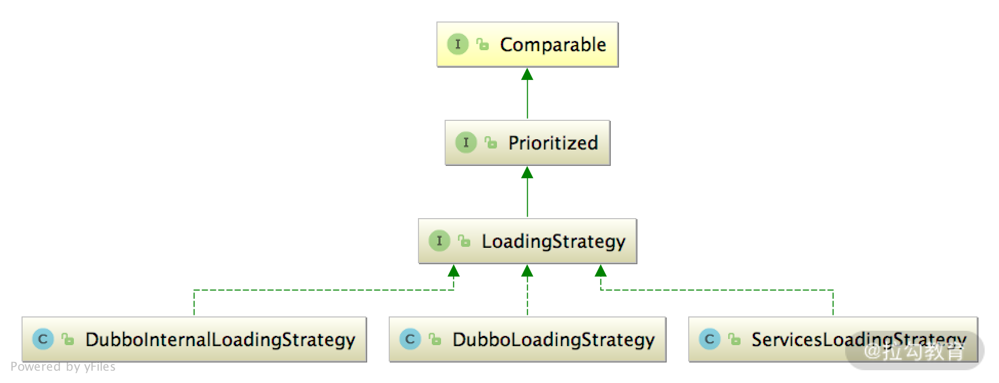
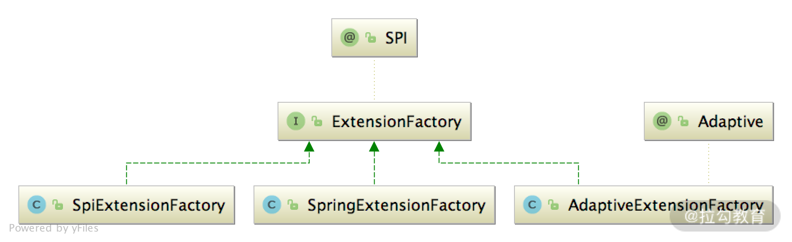
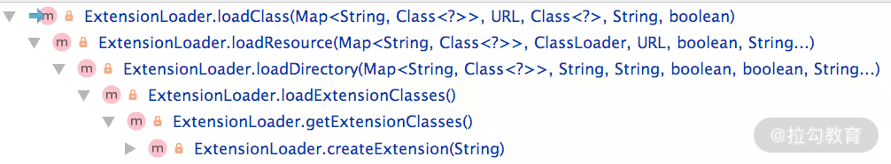
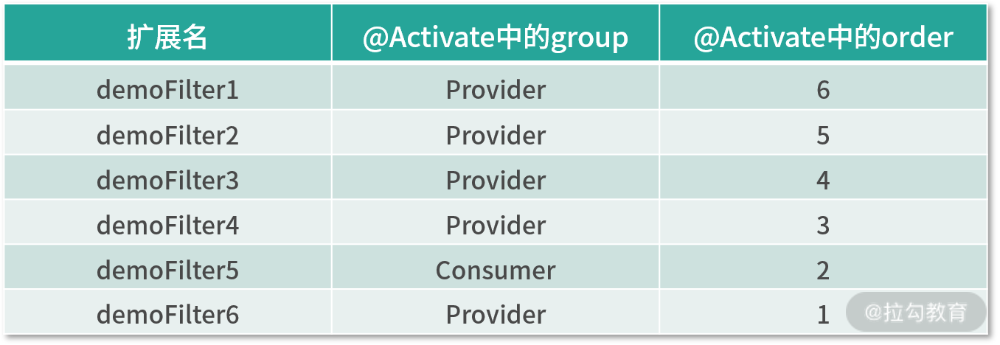

- 00 开篇词 深入掌握 Dubbo 原理与实现，提升你的职场竞争力.md.html
- 01 Dubbo 源码环境搭建：千里之行，始于足下.md.html
- 02 Dubbo 的配置总线：抓住 URL，就理解了半个 Dubbo.md.html
- 03 Dubbo SPI 精析，接口实现两极反转（上）.md.html
- 04 Dubbo SPI 精析，接口实现两极反转（下）.md.html
- 05 海量定时任务，一个时间轮搞定.md.html
- 06 ZooKeeper 与 Curator，求你别用 ZkClient 了（上）.md.html
- 07 ZooKeeper 与 Curator，求你别用 ZkClient 了（下）.md.html
- 08 代理模式与常见实现.md.html
- 09 Netty 入门，用它做网络编程都说好（上）.md.html
- 10 Netty 入门，用它做网络编程都说好（下）.md.html
- 11 简易版 RPC 框架实现（上）.md.html
- 12 简易版 RPC 框架实现（下）.md.html
- 13 本地缓存：降低 ZooKeeper 压力的一个常用手段.md.html
- 14 重试机制是网络操作的基本保证.md.html
- 15 ZooKeeper 注册中心实现，官方推荐注册中心实践.md.html
- 16 Dubbo Serialize 层：多种序列化算法，总有一款适合你.md.html
- 17 Dubbo Remoting 层核心接口分析：这居然是一套兼容所有 NIO 框架的设计？.md.html
- 18 Buffer 缓冲区：我们不生产数据，我们只是数据的搬运工.md.html
- 19 Transporter 层核心实现：编解码与线程模型一文打尽（上）.md.html
- 20 Transporter 层核心实现：编解码与线程模型一文打尽（下）.md.html
- 21 Exchange 层剖析：彻底搞懂 Request-Response 模型（上）.md.html
- 22 Exchange 层剖析：彻底搞懂 Request-Response 模型（下）.md.html
- 23 核心接口介绍，RPC 层骨架梳理.md.html
- 24 从 Protocol 起手，看服务暴露和服务引用的全流程（上）.md.html
- 25 从 Protocol 起手，看服务暴露和服务引用的全流程（下）.md.html
- 26 加餐：直击 Dubbo “心脏”，带你一起探秘 Invoker（上）.md.html
- 27 加餐：直击 Dubbo “心脏”，带你一起探秘 Invoker（下）.md.html
- 28 复杂问题简单化，代理帮你隐藏了多少底层细节？.md.html
- 29 加餐：HTTP 协议 + JSON-RPC，Dubbo 跨语言就是如此简单.md.html
- 30 Filter 接口，扩展 Dubbo 框架的常用手段指北.md.html
- 31 加餐：深潜 Directory 实现，探秘服务目录玄机.md.html
- 32 路由机制：请求到底怎么走，它说了算（上）.md.html
- 33 路由机制：请求到底怎么走，它说了算（下）.md.html
- 34 加餐：初探 Dubbo 动态配置的那些事儿.md.html
- 35 负载均衡：公平公正物尽其用的负载均衡策略，这里都有（上）.md.html
- 36 负载均衡：公平公正物尽其用的负载均衡策略，这里都有（下）.md.html
- 37 集群容错：一个好汉三个帮（上）.md.html
- 38 集群容错：一个好汉三个帮（下）.md.html
- 39 加餐：多个返回值不用怕，Merger 合并器来帮忙.md.html
- 40 加餐：模拟远程调用，Mock 机制帮你搞定.md.html
- 41 加餐：一键通关服务发布全流程.md.html
- 42 加餐：服务引用流程全解析.md.html
- 43 服务自省设计方案：新版本新方案.md.html
- 44 元数据方案深度剖析，如何避免注册中心数据量膨胀？.md.html
- 45 加餐：深入服务自省方案中的服务发布订阅（上）.md.html
- 46 加餐：深入服务自省方案中的服务发布订阅（下）.md.html
- 47 配置中心设计与实现：集中化配置 and 本地化配置，我都要（上）.md.html
- 48 配置中心设计与实现：集中化配置 and 本地化配置，我都要（下）.md.html
- 49 结束语 认真学习，缩小差距.md.html
04 Dubbo SPI 精析，接口实现两极反转（下）
在上一课时，我们一起学习了 JDK SPI 的基础使用以及核心原理，不过 Dubbo 并没有直接使用 JDK SPI 机制，而是借鉴其思想，实现了自身的一套 SPI 机制，这就是本课时将重点介绍的内容。
Dubbo SPI
在开始介绍 Dubbo SPI 实现之前，我们先来统一下面两个概念。
- 扩展点：通过 SPI 机制查找并加载实现的接口（又称“扩展接口”）。前文示例中介绍的 Log 接口、com.mysql.cj.jdbc.Driver 接口，都是扩展点。
- 扩展点实现：实现了扩展接口的实现类。
通过前面的分析可以发现，JDK SPI 在查找扩展实现类的过程中，需要遍历 SPI 配置文件中定义的所有实现类，该过程中会将这些实现类全部实例化。如果 SPI 配置文件中定义了多个实现类，而我们只需要使用其中一个实现类时，就会生成不必要的对象。例如，org.apache.dubbo.rpc.Protocol 接口有 InjvmProtocol、DubboProtocol、RmiProtocol、HttpProtocol、HessianProtocol、ThriftProtocol 等多个实现，如果使用 JDK SPI，就会加载全部实现类，导致资源的浪费。
Dubbo SPI 不仅解决了上述资源浪费的问题，还对 SPI 配置文件扩展和修改。
首先，Dubbo 按照 SPI 配置文件的用途，将其分成了三类目录。
- META-INF/services/ 目录：该目录下的 SPI 配置文件用来兼容 JDK SPI 。
- META-INF/dubbo/ 目录：该目录用于存放用户自定义 SPI 配置文件。
- META-INF/dubbo/internal/ 目录：该目录用于存放 Dubbo 内部使用的 SPI 配置文件。
然后，Dubbo 将 SPI 配置文件改成了 KV 格式，例如：
dubbo=org.apache.dubbo.rpc.protocol.dubbo.DubboProtocol
其中 key 被称为扩展名（也就是 ExtensionName），当我们在为一个接口查找具体实现类时，可以指定扩展名来选择相应的扩展实现。例如，这里指定扩展名为 dubbo，Dubbo SPI 就知道我们要使用：org.apache.dubbo.rpc.protocol.dubbo.DubboProtocol 这个扩展实现类，只实例化这一个扩展实现即可，无须实例化 SPI 配置文件中的其他扩展实现类。
使用 KV 格式的 SPI 配置文件的另一个好处是：让我们更容易定位到问题。假设我们使用的一个扩展实现类所在的 jar 包没有引入到项目中，那么 Dubbo SPI 在抛出异常的时候，会携带该扩展名信息，而不是简单地提示扩展实现类无法加载。这些更加准确的异常信息降低了排查问题的难度，提高了排查问题的效率。
下面我们正式进入 Dubbo SPI 核心实现的介绍。
1. @SPI 注解
Dubbo 中某个接口被 @SPI注解修饰时，就表示该接口是扩展接口，前文示例中的 org.apache.dubbo.rpc.Protocol 接口就是一个扩展接口：

@SPI 注解的 value 值指定了默认的扩展名称，例如，在通过 Dubbo SPI 加载 Protocol 接口实现时，如果没有明确指定扩展名，则默认会将 @SPI 注解的 value 值作为扩展名，即加载 dubbo 这个扩展名对应的 org.apache.dubbo.rpc.protocol.dubbo.DubboProtocol 这个扩展实现类，相关的 SPI 配置文件在 dubbo-rpc-dubbo 模块中，如下图所示：

那 ExtensionLoader 是如何处理 @SPI 注解的呢？
ExtensionLoader 位于 dubbo-common 模块中的 extension 包中，功能类似于 JDK SPI 中的 java.util.ServiceLoader。Dubbo SPI 的核心逻辑几乎都封装在 ExtensionLoader 之中（其中就包括 @SPI 注解的处理逻辑），其使用方式如下所示：
Protocol protocol = ExtensionLoader
.getExtensionLoader(Protocol.class).getExtension("dubbo");
这里首先来了解一下 ExtensionLoader 中三个核心的静态字段。
- strategies（LoadingStrategy[]类型）: LoadingStrategy 接口有三个实现（通过 JDK SPI 方式加载的），如下图所示，分别对应前面介绍的三个 Dubbo SPI 配置文件所在的目录，且都继承了 Prioritized 这个优先级接口，默认优先级是
DubboInternalLoadingStrategy > DubboLoadingStrategy > ServicesLoadingStrateg

- EXTENSION_LOADERS（ConcurrentMap<Class, ExtensionLoader>类型） ：Dubbo 中一个扩展接口对应一个 ExtensionLoader 实例，该集合缓存了全部 ExtensionLoader 实例，其中的 Key 为扩展接口，Value 为加载其扩展实现的 ExtensionLoader 实例。
- EXTENSION_INSTANCES（ConcurrentMap<Class<?>, Object>类型）：该集合缓存了扩展实现类与其实例对象的映射关系。在前文示例中，Key 为 Class，Value 为 DubboProtocol 对象。
下面我们再来关注一下 ExtensionLoader 的实例字段。
- type（Class<?>类型）：当前 ExtensionLoader 实例负责加载扩展接口。
- cachedDefaultName（String类型）：记录了 type 这个扩展接口上 @SPI 注解的 value 值，也就是默认扩展名。
- cachedNames（ConcurrentMap<Class<?>, String>类型）：缓存了该 ExtensionLoader 加载的扩展实现类与扩展名之间的映射关系。
- cachedClasses（Holder<Map<String, Class<?>>>类型）：缓存了该 ExtensionLoader 加载的扩展名与扩展实现类之间的映射关系。cachedNames 集合的反向关系缓存。
- cachedInstances（ConcurrentMap<String, Holder：缓存了该 ExtensionLoader 加载的扩展名与扩展实现对象之间的映射关系。
ExtensionLoader.getExtensionLoader() 方法会根据扩展接口从 EXTENSION_LOADERS 缓存中查找相应的 ExtensionLoader 实例，核心实现如下：
public static <T> ExtensionLoader<T> getExtensionLoader(Class<T> type) {
ExtensionLoader<T> loader =
(ExtensionLoader<T>) EXTENSION_LOADERS.get(type);
if (loader == null) {
EXTENSION_LOADERS.putIfAbsent(type,
new ExtensionLoader<T>(type));
loader = (ExtensionLoader<T>) EXTENSION_LOADERS.get(type);
}
return loader;
}
得到接口对应的 ExtensionLoader 对象之后会调用其 getExtension() 方法，根据传入的扩展名称从 cachedInstances 缓存中查找扩展实现的实例，最终将其实例化后返回：
public T getExtension(String name) {
// getOrCreateHolder()方法中封装了查找cachedInstances缓存的逻辑
Holder<Object> holder = getOrCreateHolder(name);
Object instance = holder.get();
if (instance == null) { // double-check防止并发问题
synchronized (holder) {
instance = holder.get();
if (instance == null) {
// 根据扩展名从SPI配置文件中查找对应的扩展实现类
instance = createExtension(name);
holder.set(instance);
}
}
}
return (T) instance;
}
在 createExtension() 方法中完成了 SPI 配置文件的查找以及相应扩展实现类的实例化，同时还实现了自动装配以及自动 Wrapper 包装等功能。其核心流程是这样的：
- 获取 cachedClasses 缓存，根据扩展名从 cachedClasses 缓存中获取扩展实现类。如果 cachedClasses 未初始化，则会扫描前面介绍的三个 SPI 目录获取查找相应的 SPI 配置文件，然后加载其中的扩展实现类，最后将扩展名和扩展实现类的映射关系记录到 cachedClasses 缓存中。这部分逻辑在 loadExtensionClasses() 和 loadDirectory() 方法中。
- 根据扩展实现类从 EXTENSION_INSTANCES 缓存中查找相应的实例。如果查找失败，会通过反射创建扩展实现对象。
- 自动装配扩展实现对象中的属性（即调用其 setter）。这里涉及 ExtensionFactory 以及自动装配的相关内容，本课时后面会进行详细介绍。
- 自动包装扩展实现对象。这里涉及 Wrapper 类以及自动包装特性的相关内容，本课时后面会进行详细介绍。
- 如果扩展实现类实现了 Lifecycle 接口，在 initExtension() 方法中会调用 initialize() 方法进行初始化。
private T createExtension(String name) {
Class<?> clazz = getExtensionClasses().get(name); // --- 1
if (clazz == null) {
throw findException(name);
}
try {
T instance = (T) EXTENSION_INSTANCES.get(clazz); // --- 2
if (instance == null) {
EXTENSION_INSTANCES.putIfAbsent(clazz, clazz.newInstance());
instance = (T) EXTENSION_INSTANCES.get(clazz);
}
injectExtension(instance); // --- 3
Set<Class<?>> wrapperClasses = cachedWrapperClasses; // --- 4
if (CollectionUtils.isNotEmpty(wrapperClasses)) {
for (Class<?> wrapperClass : wrapperClasses) {
instance = injectExtension((T) wrapperClass.getConstructor(type).newInstance(instance));
}
}
initExtension(instance); // ---5
return instance;
} catch (Throwable t) {
throw new IllegalStateException("Extension instance (name: " + name + ", class: " +
type + ") couldn't be instantiated: " + t.getMessage(), t);
}
}
2. @Adaptive 注解与适配器
@Adaptive 注解用来实现 Dubbo 的适配器功能，那什么是适配器呢？这里我们通过一个示例进行说明。Dubbo 中的 ExtensionFactory 接口有三个实现类，如下图所示，ExtensionFactory 接口上有 @SPI 注解，AdaptiveExtensionFactory 实现类上有 @Adaptive 注解。

AdaptiveExtensionFactory 不实现任何具体的功能，而是用来适配 ExtensionFactory 的 SpiExtensionFactory 和 SpringExtensionFactory 这两种实现。AdaptiveExtensionFactory 会根据运行时的一些状态来选择具体调用 ExtensionFactory 的哪个实现。
@Adaptive 注解还可以加到接口方法之上，Dubbo 会动态生成适配器类。例如，Transporter接口有两个被 @Adaptive 注解修饰的方法：
@SPI("netty")
public interface Transporter {
@Adaptive({Constants.SERVER_KEY, Constants.TRANSPORTER_KEY})
RemotingServer bind(URL url, ChannelHandler handler) throws RemotingException;
@Adaptive({Constants.CLIENT_KEY, Constants.TRANSPORTER_KEY})
Client connect(URL url, ChannelHandler handler) throws RemotingException;
}
Dubbo 会生成一个 Transporter$Adaptive 适配器类，该类继承了 Transporter 接口：
public class Transporter$Adaptive implements Transporter {
public org.apache.dubbo.remoting.Client connect(URL arg0, ChannelHandler arg1) throws RemotingException {
// 必须传递URL参数
if (arg0 == null) throw new IllegalArgumentException("url == null");
URL url = arg0;
// 确定扩展名，优先从URL中的client参数获取，其次是transporter参数
// 这两个参数名称由@Adaptive注解指定，最后是@SPI注解中的默认值
String extName = url.getParameter("client",
url.getParameter("transporter", "netty"));
if (extName == null)
throw new IllegalStateException("...");
// 通过ExtensionLoader加载Transporter接口的指定扩展实现
Transporter extension = (Transporter) ExtensionLoader
.getExtensionLoader(Transporter.class)
.getExtension(extName);
return extension.connect(arg0, arg1);
}
... // 省略bind()方法
}
生成 Transporter$Adaptive 这个类的逻辑位于 ExtensionLoader.createAdaptiveExtensionClass() 方法，若感兴趣你可以看一下相关代码，其中涉及的 javassist 等方面的知识，在后面的课时中我们会进行介绍。
明确了 @Adaptive 注解的作用之后，我们回到 ExtensionLoader.createExtension() 方法，其中在扫描 SPI 配置文件的时候，会调用 loadClass() 方法加载 SPI 配置文件中指定的类，如下图所示：

loadClass() 方法中会识别加载扩展实现类上的 @Adaptive 注解，将该扩展实现的类型缓存到 cachedAdaptiveClass 这个实例字段上（volatile修饰）：
private void loadClass(){
if (clazz.isAnnotationPresent(Adaptive.class)) {
// 缓存到cachedAdaptiveClass字段
cacheAdaptiveClass(clazz, overridden);
} else ... // 省略其他分支
}
我们可以通过 ExtensionLoader.getAdaptiveExtension() 方法获取适配器实例，并将该实例缓存到 cachedAdaptiveInstance 字段（Holder类型）中，核心流程如下：
- 首先，检查 cachedAdaptiveInstance 字段中是否已缓存了适配器实例，如果已缓存，则直接返回该实例即可。
- 然后，调用 getExtensionClasses() 方法，其中就会触发前文介绍的 loadClass() 方法，完成 cachedAdaptiveClass 字段的填充。
- 如果存在 @Adaptive 注解修饰的扩展实现类，该类就是适配器类，通过 newInstance() 将其实例化即可。如果不存在 @Adaptive 注解修饰的扩展实现类，就需要通过 createAdaptiveExtensionClass() 方法扫描扩展接口中方法上的 @Adaptive 注解，动态生成适配器类，然后实例化。
- 接下来，调用 injectExtension() 方法进行自动装配，就能得到一个完整的适配器实例。
- 最后，将适配器实例缓存到 cachedAdaptiveInstance 字段，然后返回适配器实例。
getAdaptiveExtension() 方法的流程涉及多个方法，这里不再粘贴代码，感兴趣的同学可以参考上述流程分析相应源码。
此外，我们还可以通过 API 方式（addExtension() 方法）设置 cachedAdaptiveClass 这个字段，指定适配器类型（这个方法你知道即可）。
总之，适配器什么实际工作都不用做，就是根据参数和状态选择其他实现来完成工作。 。
3. 自动包装特性
Dubbo 中的一个扩展接口可能有多个扩展实现类，这些扩展实现类可能会包含一些相同的逻辑，如果在每个实现类中都写一遍，那么这些重复代码就会变得很难维护。Dubbo 提供的自动包装特性，就可以解决这个问题。 Dubbo 将多个扩展实现类的公共逻辑，抽象到 Wrapper 类中，Wrapper 类与普通的扩展实现类一样，也实现了扩展接口，在获取真正的扩展实现对象时，在其外面包装一层 Wrapper 对象，你可以理解成一层装饰器。
了解了 Wrapper 类的基本功能，我们回到 ExtensionLoader.loadClass() 方法中，可以看到：
private void loadClass(){
... // 省略前面对@Adaptive注解的处理
} else if (isWrapperClass(clazz)) { // ---1
cacheWrapperClass(clazz); // ---2
} else ... // 省略其他分支
}
- 在 isWrapperClass() 方法中，会判断该扩展实现类是否包含拷贝构造函数（即构造函数只有一个参数且为扩展接口类型），如果包含，则为 Wrapper 类，这就是判断 Wrapper 类的标准。
- 将 Wrapper 类记录到 cachedWrapperClasses（Set<Class<?>>类型）这个实例字段中进行缓存。
前面在介绍 createExtension() 方法时的 4 处，有下面这段代码，其中会遍历全部 Wrapper 类并一层层包装到真正的扩展实例对象外层：
Set<Class<?>> wrapperClasses = cachedWrapperClasses;
if (CollectionUtils.isNotEmpty(wrapperClasses)) {
for (Class<?> wrapperClass : wrapperClasses) {
instance = injectExtension((T) wrapperClass
.getConstructor(type).newInstance(instance));
}
}
4. 自动装配特性
在 createExtension() 方法中我们看到，Dubbo SPI 在拿到扩展实现类的对象（以及 Wrapper 类的对象）之后，还会调用 injectExtension() 方法扫描其全部 setter 方法，并根据 setter 方法的名称以及参数的类型，加载相应的扩展实现，然后调用相应的 setter 方法填充属性，这就实现了 Dubbo SPI 的自动装配特性。简单来说，自动装配属性就是在加载一个扩展点的时候，将其依赖的扩展点一并加载，并进行装配。
下面简单看一下 injectExtension() 方法的具体实现：
private T injectExtension(T instance) {
if (objectFactory == null) { // 检测objectFactory字段
return instance;
}
for (Method method : instance.getClass().getMethods()) {
... // 如果不是setter方法，忽略该方法(略)
if (method.getAnnotation(DisableInject.class) != null) {
continue; // 如果方法上明确标注了@DisableInject注解，忽略该方法
}
// 根据setter方法的参数，确定扩展接口
Class<?> pt = method.getParameterTypes()[0];
... // 如果参数为简单类型，忽略该setter方法(略)
// 根据setter方法的名称确定属性名称
String property = getSetterProperty(method);
// 加载并实例化扩展实现类
Object object = objectFactory.getExtension(pt, property);
if (object != null) {
method.invoke(instance, object); // 调用setter方法进行装配
}
}
return instance;
}
injectExtension() 方法实现的自动装配依赖了 ExtensionFactory（即 objectFactory 字段），前面我们提到过 ExtensionFactory 有 SpringExtensionFactory 和 SpiExtensionFactory 两个真正的实现（还有一个实现是 AdaptiveExtensionFactory 是适配器）。下面我们分别介绍下这两个真正的实现。
第一个，SpiExtensionFactory。 根据扩展接口获取相应的适配器，没有到属性名称：
@Override
public <T> T getExtension(Class<T> type, String name) {
if (type.isInterface() && type.isAnnotationPresent(SPI.class)) {
// 查找type对应的ExtensionLoader实例
ExtensionLoader<T> loader = ExtensionLoader
.getExtensionLoader(type);
if (!loader.getSupportedExtensions().isEmpty()) {
return loader.getAdaptiveExtension(); // 获取适配器实现
}
}
return null;
}
第二个，SpringExtensionFactory。 将属性名称作为 Spring Bean 的名称，从 Spring 容器中获取 Bean：
public <T> T getExtension(Class<T> type, String name) {
... // 检查:type必须为接口且必须包含@SPI注解(略)
for (ApplicationContext context : CONTEXTS) {
// 从Spring容器中查找Bean
T bean = BeanFactoryUtils.getOptionalBean(context,name,type);
if (bean != null) {
return bean;
}
}
return null;
}
5. @Activate注解与自动激活特性
这里以 Dubbo 中的 Filter 为例说明自动激活特性的含义，org.apache.dubbo.rpc.Filter 接口有非常多的扩展实现类，在一个场景中可能需要某几个 Filter 扩展实现类协同工作，而另一个场景中可能需要另外几个实现类一起工作。这样，就需要一套配置来指定当前场景中哪些 Filter 实现是可用的，这就是 @Activate 注解要做的事情。
@Activate 注解标注在扩展实现类上，有 group、value 以及 order 三个属性。
- group 属性：修饰的实现类是在 Provider 端被激活还是在 Consumer 端被激活。
- value 属性：修饰的实现类只在 URL 参数中出现指定的 key 时才会被激活。
- order 属性：用来确定扩展实现类的排序。
我们先来看 loadClass() 方法对 @Activate 的扫描，其中会将包含 @Activate 注解的实现类缓存到 cachedActivates 这个实例字段（Map<String, Object>类型，Key为扩展名，Value为 @Activate 注解）：
private void loadClass(){
if (clazz.isAnnotationPresent(Adaptive.class)) {
// 处理@Adaptive注解
cacheAdaptiveClass(clazz, overridden);
} else if (isWrapperClass(clazz)) { // 处理Wrapper类
cacheWrapperClass(clazz);
} else { // 处理真正的扩展实现类
clazz.getConstructor(); // 扩展实现类必须有无参构造函数
...// 兜底:SPI配置文件中未指定扩展名称，则用类的简单名称作为扩展名(略)
String[] names = NAME_SEPARATOR.split(name);
if (ArrayUtils.isNotEmpty(names)) {
// 将包含@Activate注解的实现类缓存到cachedActivates集合中
cacheActivateClass(clazz, names[0]);
for (String n : names) {
// 在cachedNames集合中缓存实现类->扩展名的映射
cacheName(clazz, n);
// 在cachedClasses集合中缓存扩展名->实现类的映射
saveInExtensionClass(extensionClasses, clazz, n,
overridden);
}
}
}
}
使用 cachedActivates 这个集合的地方是 getActivateExtension() 方法。首先来关注 getActivateExtension() 方法的参数：url 中包含了配置信息，values 是配置中指定的扩展名，group 为 Provider 或 Consumer。下面是 getActivateExtension() 方法的核心逻辑：
- 首先，获取默认激活的扩展集合。默认激活的扩展实现类有几个条件：①在 cachedActivates 集合中存在；②@Activate 注解指定的 group 属性与当前 group 匹配；③扩展名没有出现在 values 中（即未在配置中明确指定，也未在配置中明确指定删除）；④URL 中出现了 @Activate 注解中指定的 Key。
- 然后，按照 @Activate 注解中的 order 属性对默认激活的扩展集合进行排序。
- 最后，按序添加自定义扩展实现类的对象。
public List<T> getActivateExtension(URL url, String[] values,
String group) {
List<T> activateExtensions = new ArrayList<>();
// values配置就是扩展名
List<String> names = values == null ?
new ArrayList<>(0) : asList(values);
if (!names.contains(REMOVE_VALUE_PREFIX + DEFAULT_KEY)) {// ---1
getExtensionClasses(); // 触发cachedActivates等缓存字段的加载
for (Map.Entry<String, Object> entry :
cachedActivates.entrySet()) {
String name = entry.getKey(); // 扩展名
Object activate = entry.getValue(); // @Activate注解
String[] activateGroup, activateValue;
if (activate instanceof Activate) { // @Activate注解中的配置
activateGroup = ((Activate) activate).group();
activateValue = ((Activate) activate).value();
} else {
continue;
}
if (isMatchGroup(group, activateGroup) // 匹配group
// 没有出现在values配置中的，即为默认激活的扩展实现
&& !names.contains(name)
// 通过"-"明确指定不激活该扩展实现
&& !names.contains(REMOVE_VALUE_PREFIX + name)
// 检测URL中是否出现了指定的Key
&& isActive(activateValue, url)) {
// 加载扩展实现的实例对象，这些都是激活的
activateExtensions.add(getExtension(name));
}
}
// 排序 --- 2
activateExtensions.sort(ActivateComparator.COMPARATOR);
}
List<T> loadedExtensions = new ArrayList<>();
for (int i = 0; i < names.size(); i++) { // ---3
String name = names.get(i);
// 通过"-"开头的配置明确指定不激活的扩展实现，直接就忽略了
if (!name.startsWith(REMOVE_VALUE_PREFIX)
&& !names.contains(REMOVE_VALUE_PREFIX + name)) {
if (DEFAULT_KEY.equals(name)) {
if (!loadedExtensions.isEmpty()) {
// 按照顺序，将自定义的扩展添加到默认扩展集合前面
activateExtensions.addAll(0, loadedExtensions);
loadedExtensions.clear();
}
} else {
loadedExtensions.add(getExtension(name));
}
}
}
if (!loadedExtensions.isEmpty()) {
// 按照顺序，将自定义的扩展添加到默认扩展集合后面
activateExtensions.addAll(loadedExtensions);
}
return activateExtensions;
}
最后举个简单的例子说明上述处理流程，假设 cachedActivates 集合缓存的扩展实现如下表所示：

在 Provider 端调用 getActivateExtension() 方法时传入的 values 配置为 "demoFilter3、-demoFilter2、default、demoFilter1"，那么根据上面的逻辑：
- 得到默认激活的扩展实实现集合中有 [ demoFilter4, demoFilter6 ]；
- 排序后为 [ demoFilter6, demoFilter4 ]；
- 按序添加自定义扩展实例之后得到 [ demoFilter3, demoFilter6, demoFilter4, demoFilter1 ]。
总结
本课时我们深入全面地讲解了 Dubbo SPI 的核心实现：首先介绍了 @SPI 注解的底层实现，这是 Dubbo SPI 最核心的基础；然后介绍了 @Adaptive 注解与动态生成适配器类的核心原理和实现；最后分析了 Dubbo SPI 中的自动包装和自动装配特性，以及 @Activate 注解的原理。
Dubbo SPI 是 Dubbo 框架实现扩展机制的核心，希望你仔细研究其实现，为后续源码分析过程打下基础。
也欢迎你在留言区分享你的学习心得和实践经验。